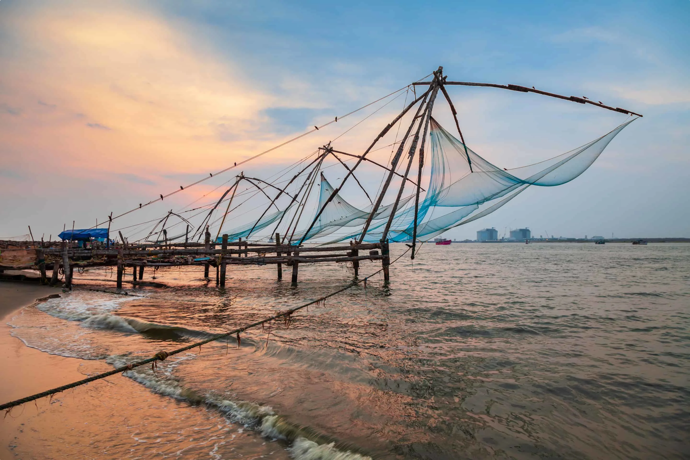
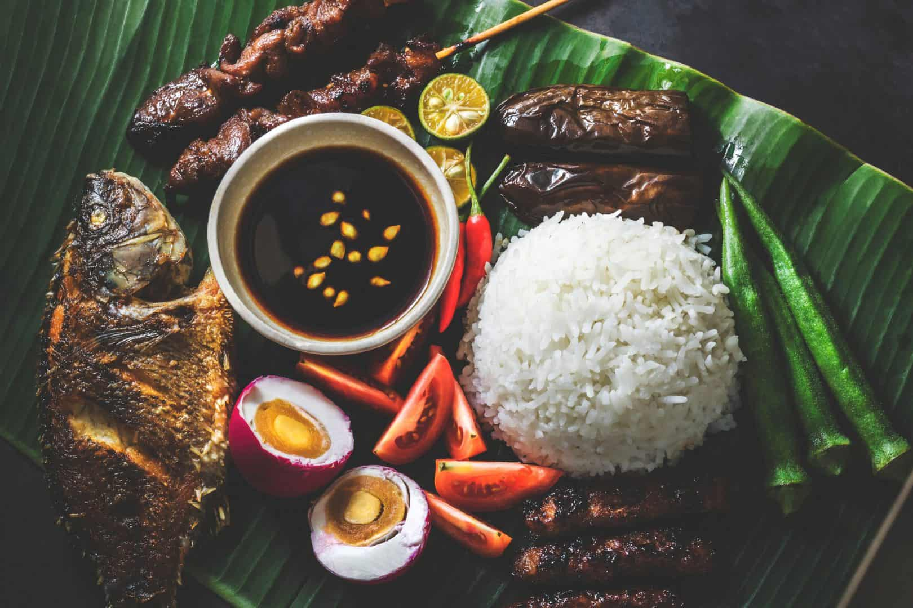

Asia > India > Kerala > Ernakulam District > Kochi (Cochin)
ABOUT KOCHI
Look for spicy dishes flavoured with tamarind and
coconut in Kochi, and don’t be surprised if your
dinner is served up on a banana leaf. The region
is a major banana-growing area, and traditional Kochi
cuisine employs the fruit in many dishes, both sweet and
savoury. Coconut water provides a refreshing and sweet
contrast to the piquant food.
ESSENTIALS KOCHI
~ DO ~
places to see , ways to wander and
signature experience
~ STAY ~
a mixture of the charming , modern and
tried and true

~ EAT ~
can't miss spots to dine , drink
and feast